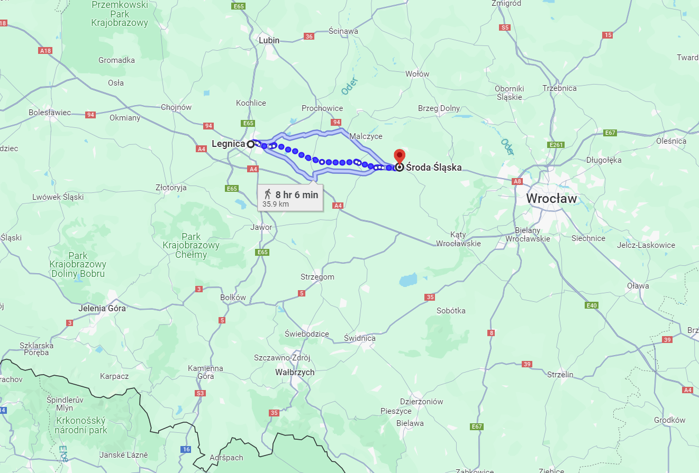
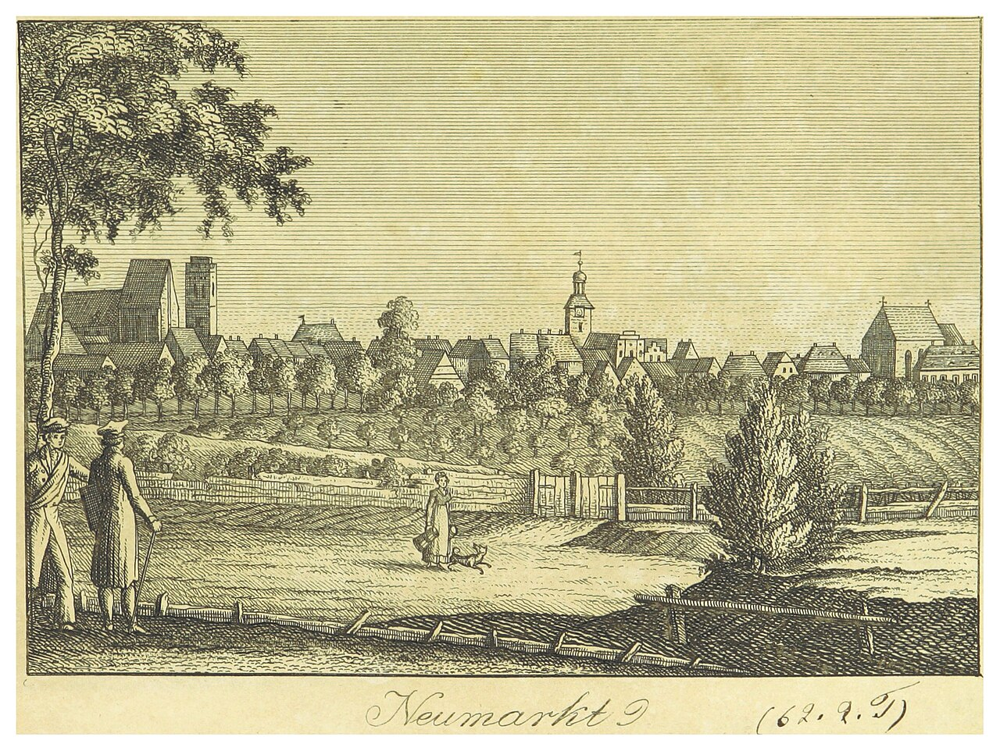
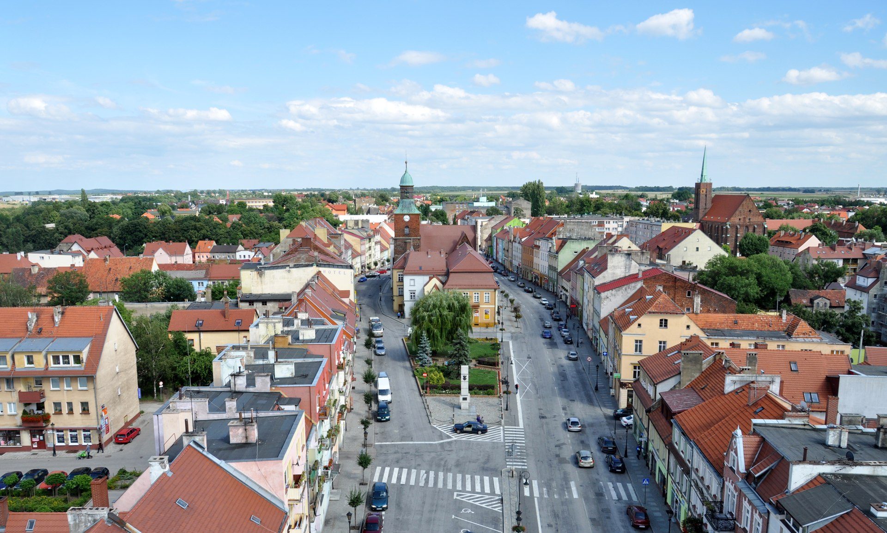
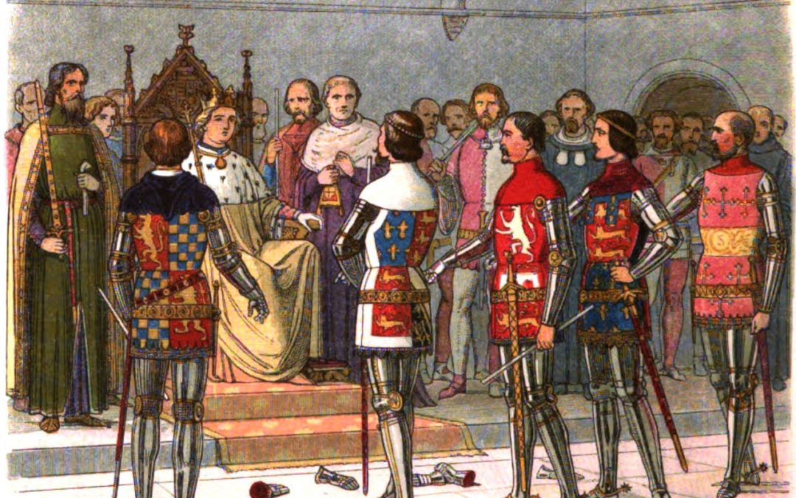

드레스덴을 향하여 (1) - 단 한 명의 프랑스군을 찾아서
게시: 2023-12-11T06:30:07+09:00
슐레지엔 방면군 사령관으로 임명된 이후, 블뤼허와 그나이제나우에게는 밤잠을 이루지 못하게 하는 고민이 생겼습니다. 그건 바로 자신의 임무를 가로막는 중립지대의 존재였습니다. 슐레지엔 방면군에게 주어진 임무는 간단했습니다. 보헤미아로 쳐들어갈 것이 분명한 그랑다르메의 측면에 붙어 감시하며 괴롭히라는 것이었습니다. 그런데 그러자면 먼저 적과 접촉을 해야 했는데, 적과 자신의 사이에는 하루 이상의 행군거리인 수십 km의 중립지대가 있다보니 그게 불가능했습니다. 특히 연합군 모두가 전투가 재개되자마자 나폴레옹은 보헤미아, 그러니까 남서쪽으로 쳐들어갈 것이 분명하다고 이야기하고 있었으므로 블뤼허는 더욱 애가 탔습니다. 원래 휴전이 종료되는 8월 10일 새벽부터 양측은 병력을 자유로이 움직일 수 있었고, 전투는 적대행위 유예기간이 종료되는 8월 17일 새벽 0시부터 가능했습니다. 이미 언급한 대로 약 10만의 러시아군과 프로이센군이 보헤미아로 이동하여 오스트리아군과 연합하여 보헤미아 방면군을 이루게 되어 있었는데, 그 이동도 8월 10일 이후에 시작되는 것이었습니다. 그러니 블뤼허가 중립지대로 진입할 수 있는 것은 8월 17일 새벽부터였는데, 그 전에 적군이 보헤미아 쪽으로 우르르 이동해버리면 슐레지엔 방면군이 그랑다르메의 측면에 접촉할 가능성이 없어지는 것이었습니다. 한마디로, 자신은 임무에 실패한 지휘관이 될 운명이었습니다. 이런 고민으로 머리를 감싸쥐고 있던 블뤼허를 구해준 것은 8월 13일 저녁에 들어온 랑제론과 팔렌(Pahlen)의 보고였습니다. 랑제론의 보고에 따르면, 리그니츠(Liegnitz)와 노이마륵트(Neumarkt) 사이의 중립지대에 프랑스군 정찰대가 활동하고 있었습니다. 또한 팔렌의 보고에 따르면 골드베르크(Goldberg)와 히어쉬베르크(Hirschberg) 사이의 중립지대에서는 약 20여 명의 프랑스군이 식량을 징발하고 있다고 했습니다. 드론도 없던 시절 이들은 중립지대 저 깊숙한 곳에서 프랑스군이 돌아다니는 것을 어떻게 알았을까요? 이들의 보고는 아군 장교가 직접 확인한 것이 아니라 현지 주민들의 증언에 근거하고 있다고 했습니다. 랑제론은 중립지대 안에서 활동하던 러시아 스파이 보르주키(Borzuki)라는 사람의 편지를 동봉했는데, 바로 전날인 8월 12일 오후에 중립지대인 베르비스도르프(Berbisdorf)라는 마을에서 씌여진 이 편지는 이런 내용을 생생하게 보고했습니다. "오전 11시경, 보병 150과 기병 200으로 이루어진 적군이 전면적으로 중립지대 안으로 진격 중이며 이미 알트쇠나우(Altschönau)까지 도달했습니다. 쇠나우(Schönau) 마을 주민들은 즉각 300파운드의 빵과 브랜디 16통, 건초와 기타 보급품을 내놓을 것을 요구받고 있습니다. 이들은 적의 전위대에 불과하며 그 뒤에는 더 큰 규모의 부대가 뒤따르고 있는데, 적군은 아마도 야우어(Jauer)로 갈 것 같습니다."

(리그니츠(Liegnitz)와 노이마륵트(Neumarkt) 사이는 약 36km로서 하루가 약간 넘는 행군거리입니다. 당시 노이마륵트에는 프랑스-러시아-프로이센 3개국의 감독관들이 이 중립지대의 관리를 위해 주둔하고 있었습니다. 당시 프로이센측의 감독관은 크루제마르크(Friedrich Wilhelm Ludwig von Krusemarck) 장군이었는데, 특히 크루제마르크 장군은 블뤼허와 사이가 좋지 않은 사람이었습니다.)

(노이마륵트의 1819년 모습입니다.)

(독일 도시 노이마륵트는 지금은 폴란드 도시 슈로다 슈랑스카(Środa Śląska)가 되었습니다. 지금도 인구 1만이 채 안 되는 소도시인데, 이런 사진 볼 때마다 부러운 것은 모든 것이 서울에 집중된 한국에 비해 유럽 도시들은 지방의 작은 도시들도 매우 깔끔하게 잘 정돈된 모습을 보여준다는 것입니다.) 당시 보통 이런 스파이 노릇은 그다지 신뢰할 수 없는 사람들이나 하는 것이었기 때문에, 이런 보고는 반쯤 걸러들어야 하는 것이 일반적이었습니다. 나폴레옹도 많은 수의 스파이를 운용했지만 그 자신도 스파이들의 보고를 다 믿지 않았습니다. 그러나 나폴레옹이든 블뤼허든 그 누구든, 사람은 듣고 싶어하는 소식만 듣기 마련입니다. 보르주키라는 이름의 이 러시아 스파이는 자신의 보고가 정확하지 않다면 자신의 목을 걸겠다고 보장했는데, 블뤼허에게는 굳이 그런 보장이 필요하지 않았습니다. 중립지대에 진입할 핑계거리만 찾고 있던 블뤼허와 그나이제나우에게 이 보고는 가뭄 끝의 단비 같은 것이었으니까요. 이 보고들이 들어올 때, 블뤼허와 그나이제나우는 8월 17일 새벽에 수행할 휘하 부대들의 이동 명령서를 작성 중에 있었습니다. 신이 난 그들은 즉석에서 명령서를 수정하여, 프랑스군이 먼저 중립지대를 침입했으므로 전투 재개 유예기간은 이미 무의미해졌다면서 즉각 중립지대로 진격하여 프랑스군을 몰아내고 슐레지엔 방면군에게도 부족했던 식량을 확보하도록 명령했습니다. 모든 군사 명령은 뚜렷해야 했습니다. 비록 프랑스군이 먼저 위반했다는 핑계를 내세우기는 했지만, 이렇게 휴전 협정을 정면으로 위반하면서 중립지대로 대거 진격을 개시할 때 블뤼허가 휘하 군단장들에게 내린 교전 지침은 무엇이었을까요? 그것이 좀 미적지근했습니다. 각 군단의 전위대는 만약 더 우세한 병력의 적을 만난다면 후퇴하여 본대에 합류하고, 만약 적군이 후퇴한다면 추격하여 최대한 피해를 입히라는 것이었습니다. 각 군단의 본대가 어디까지 후퇴하고 어디까지 진격해야 하는지에 대해서는 아무 지침이 없었습니다. 일단 휴전 협정을 깨기는 했으나, 정작 블뤼허 본인도 대놓고 본격적인 전투를 벌이는 것은 무척 꺼림직했던 것입니다. 1840년대에 프로이센 참모진에 의해 씌여진 역사서는 이때의 휴전조약 위반에 대해 이렇게 애둘러 표현했습니다. 프랑스군이 (결투의 의미로) 장갑을 집어던진 것은 아니고 단지 장갑을 떨어뜨렸을 뿐인데, 블뤼허가 그 장갑을 냉큼 집어들었다고요. 번역을 하자면 배고픈 프랑스군 일부가 위반 행위를 저질렀을 뿐인데 블뤼허가 그걸 핑계 삼아 도발을 한 것이라는 것이지요.

(결투를 신청할 때 장갑을 던지는 행위는 원래 중세 기사들이 결투를 신청하며 갑주장갑(gauntlet)을 던지는 것에서 비롯된 것입니다. 저 기사들 발치에 여러 개의 건틀릿이 나뒹굴고 있는데, 뭔 사연인지 모르겠네요.) 그런데 다행인지 불행인지, 14일 새벽부터 기세 좋게 중립지대로 밀고 들어간 슐레지엔 방면군은 아무 것도 찾지 못했습니다. 분명히 보고에 따르면 비록 소수이긴 하지만 프랑스군이 먼저 들어와 징발이라는 이름 하에 선량한 주민들을 약탈하고 있어야 했는데, 그런 흔적은 전혀 발견되지 않았습니다. 이렇게 되면 슐레지엔 방면군이 신사들의 약속인 휴전 협정을 정면으로 어긴 파렴치범이 되는 것이었습니다. 휴전 협정을 깼다고 해서 전쟁 범죄로 규정이 되고 뭔가 처벌을 받거나 페널티킥 같은 벌칙이 주어지는 것은 아니었습니다. 그러나 당시는 18세기~19세기초로서, 단지 명예를 지키기 위해 목숨을 걸고 결투를 하던 시절이었습니다. 약속을 깼다는 것은 심각한 불명예였습니다. 슐레지엔 방면군 소속 러시아군 장교들은, 비록 자신들의 보고서가 빌미가 되어 이렇게 휴전이 깨지게 되었음에도 '블뤼허가 이런 식으로 협정을 위반한 것은 정말 파렴치한 행위로서 명예로운 러시아군은 저런 인간의 지휘 하에 더 이상 있을 수 없다'라며 뒷담화를 쑥덕거렸습니다. 이런 슐레지엔 방면군에게 필요했던 것은 팔에 빵과 와인 등 약탈품을 두 팔 가득히 안고 있는 딱 한 명의 프랑스군 졸병이었는데, 중립지대 안쪽으로 아무리 깊숙히 들어와도 그 딱 한 명의 프랑스군을 찾지 못했습니다. 그런데 오후에 스트리가우(Striegau)에서 마침내 그 한 명의 프랑스군을 찾았습니다. 그런데 이 프랑스군은 매우 특이한 사람이었고, 연합군과 그랑다르메 양측에 적지 않은 파장을 불러 일으키게 됩니다. 과연 이 사람은 어떤 사람이었을까요?
Source : The Life of Napoleon Bonaparte, by William Milligan Sloane Napoleon and the Struggle for Germany, by Leggiere, Michael V https://pl.wikipedia.org/wiki/%C5%9Aroda_%C5%9Al%C4%85ska https://www.cassidycash.com/did-shakespeare-use-a-gauntlet